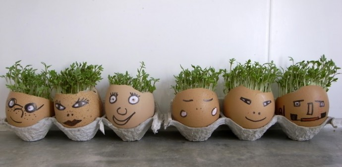
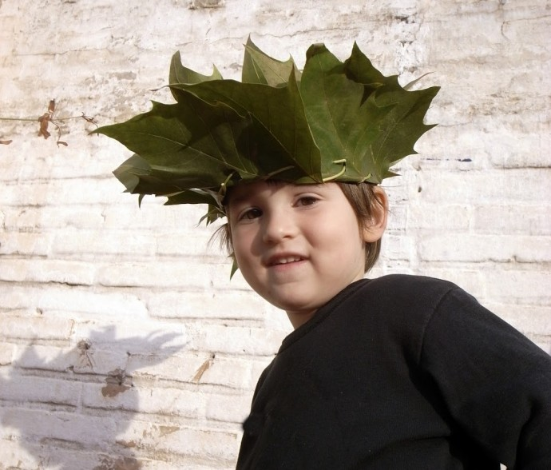

Facebook
Pinterest
Instagram
⌕ Search
ES
EN
DE
☰ Menu
Home
The House
Accessories
Decorate
Instruccions
Blog
Holidays
Christmas
Easter
Halloween
Carnival & costumes
Valentine’s Day
Birthday
Mother’s/Father’s Day
Back to school
Seasons
Spring
Summer
Autumn
Winter
What to do
Toys
Games
Printables
Food & recipes
Decoration
Painting
Experiments
Outdoors
Learning
Animals
Gifts & jewellery
Building & tricks
Other crafts
Material
Paper
Cardboard
Paper rolls
Recycling
Stones
Leaves & nature
Fabric & sewing
Home
›
Blog
›
Leaves
Leaves
Category
Activity
Pencilholder
Occasion
Collage
Occasion
Christmas garland
Occasion
Present tags
Autumn
Leaves
Material
{ mustache }
Material
Palm tree
Material
Message
Leaves
Magic
Occasion
Table decoration
Occasion
Window decorations
Occasion
Autumn
Occasion
Leave
Leaves
Decoration
Occasion
Mandala Ginko
Play
Seed
Occasion
Festoon
Activity
Changing scale
Material
Peafowl
Autumn
Wind chimes
Autumn
Hedgehog 01
Activity
Eggheads

Autumn
Collage
Costume
Leafcrown

Page 1 / 2
Older →